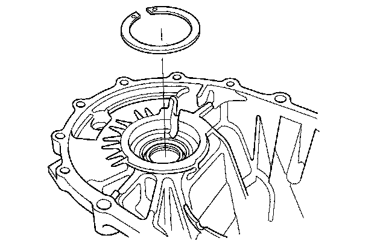
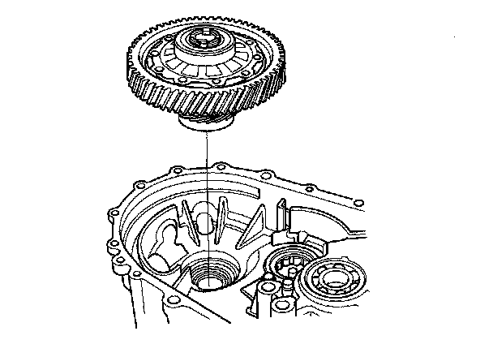
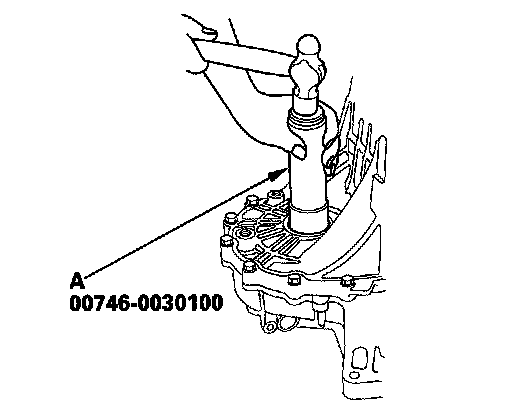
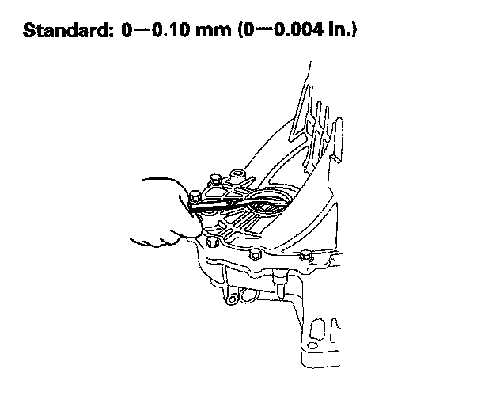
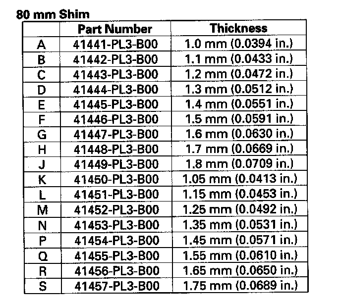

Differential Thrust Clearance Adjustment
Differential Thrust Clearance AdjustmentSpecial Tool Required
^ Driver handle, 40 mm I.D. 07746-0030100
1. If you removed the 80 mm shim from the transmission housing reinstall is the same sized shim.

2. Install the differential assembly into the clutch housing.

3. Install the transmission housing onto the clutch housing, then tighten the 8 mm flange bolts in a crisscross pattern in several steps.
Specified Torque 8 x 1.25 mm 27 Nm (2.8 kgf-m, 20 lbf-ft)
4. Use the 40 mm I.D. driver (A) to bottom the differential assembly in the clutch housing.

5. Measure clearance between the 80 mm shim and the bearing outer race in transmission housing.

6. If the clearance is more than the standard, select a new 80 mm shim from the following table. If the clearance measured in step 5 is within the standard, go to step 9.

7. Remove the bolts and transmission housing.
8. Replace the thrust shim selected in step 6, then recheck the clearance.
9. Reinstall the transmission housing.